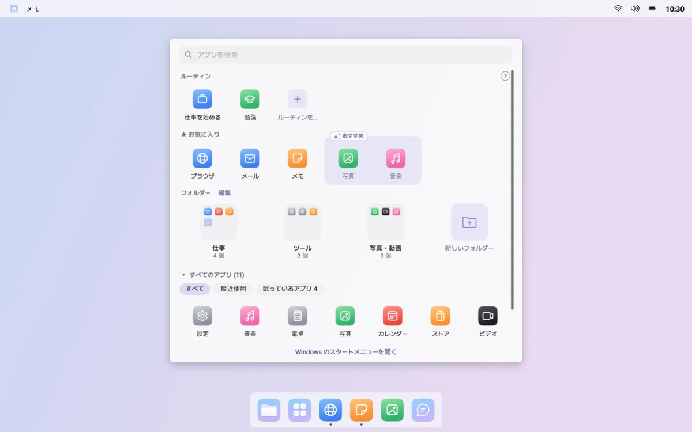
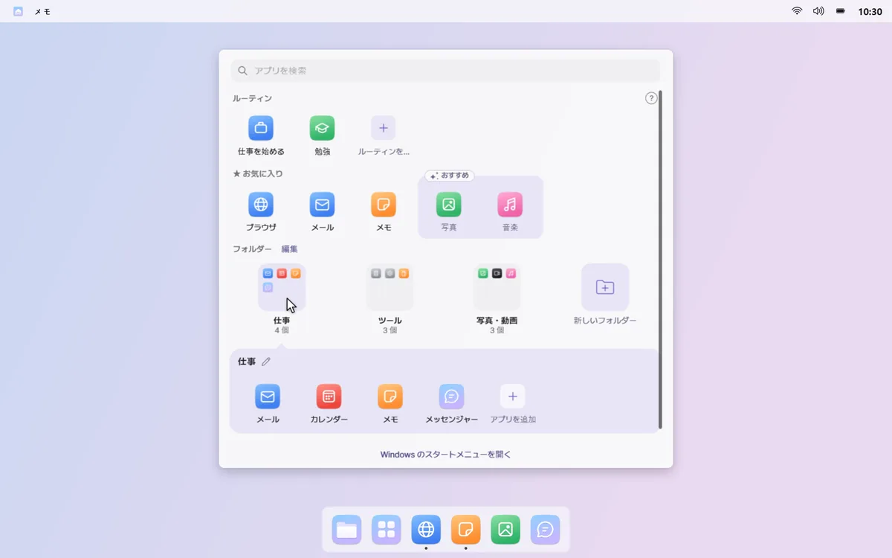
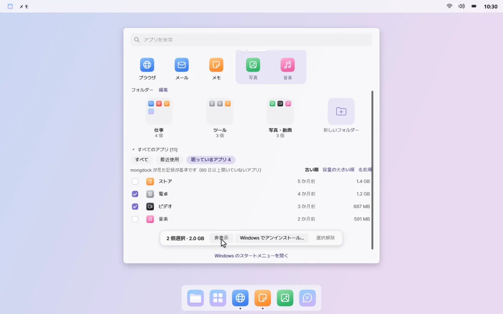

すべてのアプリ
使うアプリを目の前に
ドックの「すべてのアプリ」をクリックすると、画面中央にパネルが開きます。お気に入り、使うアプリだけのフォルダー、すべてのアプリが、整理された状態で表示されます。
たまっていくアプリ · 一度インストールしたきり開いていないアプリが、一覧に残り続けます。
01
開いてすぐ入力できる
パネルは画面全体を覆わず、開いたらすぐ検索ボックスに入力できます。一番上の列のルーティンも、クリックひとつで開けます。


02
お気に入りと、おすすめ
よく開くアプリは、お気に入りの列に固定しましょう。最近よく使うアプリは点線の枠でおすすめされ、＋をクリックするとお気に入りに追加されます。

03
使うアプリだけのフォルダー
仕事・コミュニケーション・ゲームのように分類されたフォルダーに、最近使ったアプリだけが入ります。フォルダーの名前と順番は、編集モードでクリックして変えられます。

04
眠っているアプリを整理
60 日以上開いていない「眠っているアプリ」を、使用容量と一緒に表示します。パネルで非表示にしたり、選んで Windows でアンインストールしたりできます。

おすすめとフォルダーに使う起動履歴は、この PC の中だけに残ります。パネルの空いている所を右クリックして「よく使うアプリの記録」をオフにすると、記録を止めて消去します。 プライバシーポリシーを読む
知っておきたいこと
- 眠っているアプリをアンインストールすると、アプリごとに Windows のアンインストール画面が順に開きます。mongdock が直接削除することはなく、この方法でアンインストールできないアプリは一覧に表示されます。